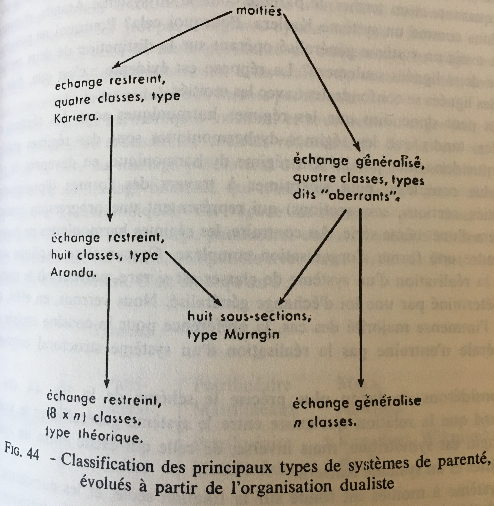
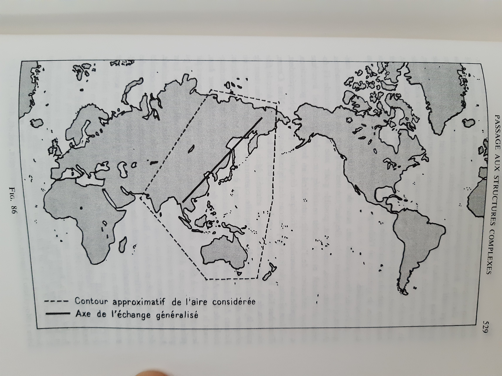

profectae
Nous entendons par structures élémentaires de la parenté les systèmes où la nomenclature permet de déterminer immédiatement le cercle des parents et celui des alliés ; c’est-à-dire les systèmes qui prescrivent le mariage avec un certain type de parents, distinguent ceux-ci en deux catégories : conjoints possibles et conjoints prohibés. Nous réservons le nom de structures complexes aux systèmes qui se limitent à définir le cercle des parents, et qui abandonnent à d’autres mécanismes, économiques ou psychologiques, le soin de procéder à la détermination du conjoint. […] La définition qui précède conduirait donc à réserver le nom de structure élémentaire aux systèmes qui, comme le mariage des cousins croisés, procèdent à une détermination quasi automatique du conjoint préféré ; tandis que les systèmes fondés sur un transfert de richesse ou sur le libre choix comme plusieurs systèmes africains et celui de notre société contemporaine, entreraient dans la catégorie des structures complexes. Nous nous conformerons, en gros, à cette distinction.
Début de la préface de la 1ère édition
Après avoir cité Eddington : « la physique devient l’étude des organisations », Köhler écrivait, il y aura bientôt vingt ans : « Dans cette voie… elle rencontrera la biologie et la psychologie ». Ce travail aura rempli son objet si, après l’avoir terminé, le lecteur se sent enclin à ajouter : et la sociologie.
Fin de la préface de la 1ère édition
Des sociétés primitives ou archaïques sont limitées, par leur régime économique, à un chiffre de population très restreint ; et c’est précisément pour des chiffres de cet ordre que la réglementation des mariages consanguins ne peut avoir que des conséquences génétiques négligeables.
19. II. Le problème de l’inceste
La prohibition de l’inceste n’est, ni purement d’origine culturelle, ni purement d’origine naturelle ; et elle n’est pas, non plus, un dosage d’éléments composites empruntés partiellement à la nature et partiellement à la culture. Elle constitue la démarche fondamentale grâce à laquelle, par laquelle, mais surtout en laquelle, s’accomplit le passage de la nature à la culture.
28-29. II. Le problème de l’inceste
Le privilège polygame du chef vient bouleverser cette formule idéale ; il en résulte, pour chaque individu, un élément d’insécurité qui ne serait jamais apparu autrement. Quelle est donc l’origine du privilège, et quelle est sa signification ? En le reconnaissant, le groupe a échangé les éléments de sécurité individuelle qui s’attachaient à la règle monogame contre une sécurité collective qui découle de l’organisation politique. Sous forme de fille ou de sœur, chaque home reçoit son épouse d’un autre homme ; le chef, lui, reçoit plusieurs femmes du groupe. En échange, il apporte une garantie contre le besoin et le danger, non certes aux individus particuliers dont il épouse les sœurs ou les filles, non pas même à ceux que l’exercice de son droit polygame condamne, peut-être définitivement, au célibat, mais au groupe considéré comme groupe. Car c’est le groupe lui-même qui a suspendu le droit commun à son profit.
La polygamie ne contredit donc pas l’exigence d’une équitable répartition des femmes ; elle superpose seulement une règle de répartition à une autre. En fait, monogamie et polygamie correspondent à deux types de relations complémentaires : d’une part, le système de prestations et de contre-prestations qui lie entre eux les membres individuels du groupe, d’autre part, le système de prestations et de contre-prestations qui lie entre eux l’ensemble du groupe et son chef.
51-52. Endogamie et exogamie
En quoi consistent les structures mentales auxquelles nous avons fait appel et dont nous croyons pouvoir établir l’universalité ? Elles sont, semble-t-il, au nombre de trois : l’exigence de la Règle comme Règle ; la notion de réciprocité considérée comme la forme la plus immédiate sous laquelle puisse être intégrée l’opposition de moi et d’autrui ; enfin, le caractère synthétique du Don, c’est-à-dire le fait que le transfert consenti d’une valeur d’un individu à un autre change ceux-ci en partenaires, et ajoute une qualité nouvelle à la valeur transférée.
98. L’illusion archaïque
Ce qui donne à l’objet sa valeur, c’est la « relation à autrui ». Seule la nourriture a une valeur intrinsèque pour l’affamé ; mais peu d’objets offrent un intérêt constant en tous temps et en toutes circonstances. Ce qui est désespérément désiré, ne l’est que parce que quelqu’un le possède. Un objet indifférent devient essentiel par l’intérêt qu’autrui y porte ; le désir de posséder est donc, d’abord et avant tout, une réponse sociale.
100. L’illusion archaïque
L’organisation dualiste apparait comme un système global, engageant le groupe dans sa totalité. Au contraire, le mariage entre cousins croisés se présente beaucoup plus comme un procédé spécial ; il constitue moins un système qu’une tendance.
119. L’alliance et la filiation
Nous avons, au contraire, postulé d’abord la conscience d’une opposition : opposition entre deux types de femmes, ou plutôt entre deux types de rapports où l’on peut être vis-à-vis d’une femme : soit sœur ou fille, c’est-à-dire femme cédée, soit épouse, c’est-à-dire femme acquise ; femme parente ou femme alliée. Et nous avons montré comment, à partir de cette opposition primitive, une structure de réciprocité se construit, selon laquelle le groupe qui a acquis doit rendre et celui qui a cédé peut exiger ; nous avons ainsi constaté que, dans un groupe quelconque, les cousins parallèles entre eux sont issus de familles qui se trouvent dans la même position d’équilibre formelle, qui est une position d’équilibre statique, tandis que les cousins croisés sont issus de familles qui se trouvent dans des positions formelles antagonistes, c’est-à-dire, les unes par rapport aux autres, dans un déséquilibre dynamique qui est l’héritage de la parenté, mais que seule l’alliance a le pouvoir de résoudre. Le rapport d’échange est donné antérieurement aux choses échangées, et indépendamment d’elles. Et si les biens considérés isolément sont identiques, ils cessent de l’être lorsqu’on les situe à la place qui leur appartient dans la structure de réciprocité.
160-161. L’échange matrimonial
Dans ces systèmes, la notion de paire implique une double relation matrimoniale. ; ainsi, pour la paire AB, celle d’un homme A avec une femme B, et celle d’un homme B, avec une femme A. Au contraire, dans un système d’échange généralisé, les paires sont univoques au lieu d’être réciproques. C’est-à-dire qu’elles unissent seulement les hommes d’une section avec les femmes de l’autre section.
206-207
Il y a donc deux types de régimes harmoniques : patrilinéaire et patrilocal, matrilinéaire et matrilocal ; et deux types de régimes dysharmoniques : patrilinéaire et matrilocal, matrilinéaire et patrilocal.
248

Mais ici, nous touchons à la nature même de l’opposition intérieure au système Katchin : l’échange généralisé suppose l’égalité, et il est source d’inégalité. Il suppose l’égalité, car la condition théorique d’application de la formule élémentaire est que l’opération c épouse A, qui ferme le cycle, soit équivalente à l’opération A épouse b, qui l’a ouvert au début. Il faut, pour que le système fonctionne harmonieusement, qu’une femme a vaille une femme b, une femme b une femme c, et une femme c une femme a, autrement dit, que les lignées A, B, C aient même statut et même prestige. Au contraire, le caractère spéculatif du système ; l’élargissement du cycle ; et l’établissement de cycles secondaires entre certaines lignées entreprenantes, et à leur profit ; enfin, la préférence inévitable pour certaines alliances, qui aura pour résultat l’accumulation des femmes à telle ou telle étape du circuit : autant de facteurs d’inégalité, qui peuvent, à chaque instant, provoquer une rupture. On arrive donc à la conclusion que l’échange généralisé conduit, de façon presque inéluctable, à l’anisogamie, c’est-à-dire au mariage entre conjoints de statuts différents ; que cette conséquence doit apparaitre avec d’autant plus de netteté quand les cycles d’échange se multiplient ou s’élargissent ; mais qu’en même temps, elle est en contradiction avec le système, et doit donc entraîner sa ruine.
306
« Quand deux villages sont en guerre, il est naturel qu’ils se haïssent cordialement. Cependant, cette haine ne s’étend pas aux femmes du village ennemi, mariées dans l’autre village. Ces mariages étaient jadis fréquents, et la femme avait le droit de rendre visite à ses parents, bien que son mari fût en guerre avec eux. Elle emmenait deux ou trois hommes du village de son mari avec elle, tous portant des paquets de feuillage. Pendant tout le temps qu’ils séjournaient dans le village ennemi, ils étaient considérés comme sacrés… » On voit que, dans de tels systèmes, les alliances matrimoniales sont le fondement essentiel de la structure sociale. Comme dit le proverbe : « le mariage est le plus fort de tous les nœuds. »
334
Les droits et les interdictions, qui s’appliquent aux enfants d’une « sœur » et d’un « frère », s’étendent à toutes les générations des deux clans, clan du frère et clan du mari de la sœur. Il suffit donc qu’une femme parte se marier dans un clan donné pour que toutes les femmes de ce clan deviennent interdites aux hommes de son propre clan. »
340. Chez les Gilyak
En fait, le prix de la fiancée est très élevé, et les pauvres ne pourraient espérer trouver une femme sans l’institution du mariage préférentiel ; les rapports sexuels sont, d’ailleurs, autorisés entre un homme et ses angey non mariées, et bien que les privilèges du mari doivent être respectés à l’égard d’une angey mariée, on pratique la polyandrie fraternelle par commune décision.
347. Chez les Gilyak
Rappelant que Chen et Shryock citent deux cent soixante-dix termes, et que leur liste pourrait être considérablement allongée par l’application des mêmes éléments à de nouvelles combinaisons, il ajoute : « Sans doute, tous ces termes ne sont pas d’usage courant ; mais tous semble-t-il, pourraient être facilement compris. Ce serait aller trop loin que de dire que l’outillage terminologique chinois doit permettre la détermination, sans équivoque, de toute variation concevable de parenté jusqu’au septième ou huitième degré. Mais il définit certainement une fraction beaucoup plus vaste des possibilités totales que ne le fait aucun système européen. »
378. L'ordre Tchao Mou
Que reste-t-il à interpréter ? La négligence du facteur génération ; pour que celle-ci se produise, il faut, et il suffit, que ces groupes, au lieu de constituer des classes, forment des lignées, et que la notion de lignée soit assez fortement implantée pour qu’elle prime celle de génération : on dira alors qu’une lignée A fournit des femmes à une lignée B, qui fournit des femmes à une lignée C, etc. avec retour à la lignée A. Le seul point important est que le conjoint possible appartienne à la lignée requise ; la génération offre un caractère qui n’est pas pris en considération, ou qui ne l’est que pour des raisons d’âge ou de convenance.
416
Nous sommes donc amené à l’hypothèse de la coexistence, dans la Chine archaïque, de deux systèmes de parenté : l’un, de pratique paysanne, fondé sur une division réelle ou fonctionnelle en moitiés exogamiques, l’échange des sœurs, et le mariage entre cousins croisés bilatéraux ; et l’autre, d’inspiration féodale, fondé sur des cycles d’alliance entre lignées patrilinéaires (réparties ou non en moitiés exogamiques), et le mariage avec la cousine croisée matrilatérale et sa nièce. Soit un système d’échange restreint, et un système d’échange généralisé.
425
Quand on passe des systèmes de parenté extrême-orientaux à ceux de l’Inde, on n’entre pas, à proprement parler, dans un domaine nouveau. Depuis le Tibet et l’Assam jusqu’à la Sibérie, en passant par la Chine tout entière, nous avons rencontré, comme le « leitmotiv » de la théorie indigène du mariage, la croyance que les os viennent du côté du père, et la chair du côté de la mère. Et, dès les temps protohistoriques, l’Inde arbore la même devise ; en fait, c’est l’Inde qui en fournit l’expression la plus ancienne puisque, comme on l’a déjà mentionné, l’idée se trouve déjà dans le Mahâbhârata. Cette récurrence d’un thème fondamental offre un considérable intérêt. On se souvient qu’au Tibet, la distinction entre « parents de l’os » et « parents de la chair » est objectivement liée à la formule de l’échange généralisé ; et il en a été probablement de même en Chine et en Sibérie. Ce qu’il faut souligner ici, c’est que cette distinction est incompatible avec un système d’échange restreint. Elle porte, en effet, non sur des individus – père et mère, qui contribueraient chacun pour leur part à la formation du corps de l’enfant – mais sur des groupes, ou des lignées, dont la coopération, dans et par l’alliance matrimoniale, est requise pour constituer cette unité de couple que les Tibétains appellent tsha-shan, et les Gilyak pandf, « ceux qui sont nés », et qui, chez les Chinois aussi, doit son existence à l’alliance des houen et des yin. Or, dans un système d’échange restreint, chaque groupe est à la fois « os » et « chair » puisqu’il donne, pour parler le langage de l’école, des pères et des mères, dans le même temps et sous le même rapport : vis-à-vis d’un groupe A, un groupe B est donneur de mères et exclusivement cela ; tandis que A lui-même est, pour lui-même et pour B, seulement donneur de maris (bien que pour un troisième groupe D, il soit aussi donneur de femmes).
454
Car toutes ces formules expriment, sous des formes diverses, la même vérité : il suffit qu’un groupe humain proclame la loi du mariage avec la fille du frère de la mère, pour que s’organise, entre toutes les générations et entre toutes les lignées, une vaste ronde de réciprocité, aussi harmonieuse et inéluctable que les lois physiques et biologiques ; tandis que le mariage avec la fille de la sœur du père oblige, de génération en génération et de lignée en lignée, à interrompre et à renverser les parcours. Dans un cas, le cycle global de réciprocité est idéalement coextensif au groupe lui-même, à la fois dans le temps et dans l’espace ; il vit et se développe avec lui ; dans l’autre, les cycles multiples qui se créent continuellement morcèlent et dénaturent l’unité du groupe ; ils la morcèlent, parce qu’il y a autant de cycles que de lignées ; et ils la dénaturent, parce que le sens des cycles doit être inversé à chaque génération.
519

Le mariage par achat est donc compatible avec toutes les formes d’échange.
540
Trois caractères fondamentaux du mariage européen moderne : la liberté du choix du conjoint dans la limite des degrés prohibés ; l’égalité des sexes devant les vœux conjugaux ; enfin, l’émancipation de la parentèle et l’individualisation du contrat.
547
L’exogamie a une valeur moins négative que positive, elle affirme l’existence sociale d’autrui, et elle n’interdit le mariage endogame que pour introduire, et prescrire, le mariage avec un autre groupe que la famille biologique : non, certes, parce qu’un péril biologique est attaché au mariage consanguin, mais parce qu’un bénéfice social résulte d’un mariage exogame.
551
La prohibition de l’inceste est moins une règle qui interdit d’épouser mère, sœur ou fille, qu’une règle qui oblige à donner mère, sœur ou fille à autrui. C’est la règle du don par excellence. Et c’est bien cet aspect, trop souvent méconnu, qui permet de comprendre son caractère : toutes les erreurs d’interprétation de la prohibition de l’inceste proviennent d’une tendance à voir, dans le mariage, un processus discontinu, qui tire de lui-même, dans chaque cas individuel, ses propres limites et ses possibilités.
C’est ainsi qu’on cherche, dans une qualité intrinsèque de la mère, de la fille ou de la sœur, les raisons qui peuvent prévenir le mariage avec elles. On se trouve, alors, infailliblement entraîné vers des considérations biologiques, puisque c’est seulement d’un point de vue biologique, mais certainement pas social, que la maternité, la sororalité ou la filialité – si l’on peut dire – sont des propriétés des individus considérés ; mais, envisagées d’un point de vue social, ces qualifications ne peuvent être regardées comme définissant des individus isolés, mais des relations entre ces individus et tous les autres : la maternité est une relation, non seulement d’une femme à ses enfants, mais de cette femme à tous les autres membres du groupe, pour lesquels elle n’est pas une mère, mais une sœur, une épouse, une cousine, ou simplement une étrangère sous le rapport de la parenté.
552
Tout mariage est une rencontre dramatique entre la nature et la culture, entre l’alliance et la parenté. « Qui a donné la fiancée ? » chante l’hymne indou du mariage. « A qui donc l’a-t-il donnée ? C’est l’amour qui l’a donnée ; c’est à l’amour qu’elle a été donnée. L’amour a donné ; l’amour a reçu. L’amour a rempli l’océan. Avec amour je l’accepte. Amour ! que celle-ci t’appartienne. » Ainsi, le mariage est un arbitrage entre deux amours : l’amour parental et l’amour conjugal ; mais tous deux sont amour, et dans l’instant du mariage, si l’on considère cet instant isolé de tous les autres, tous deux se rencontrent et se confondent, « l’amour a rempli l’océan. »
561
2022-08 : Constituendi
Retour à l'accueil des fiches de lecture de philo
Retour à l'accueil général